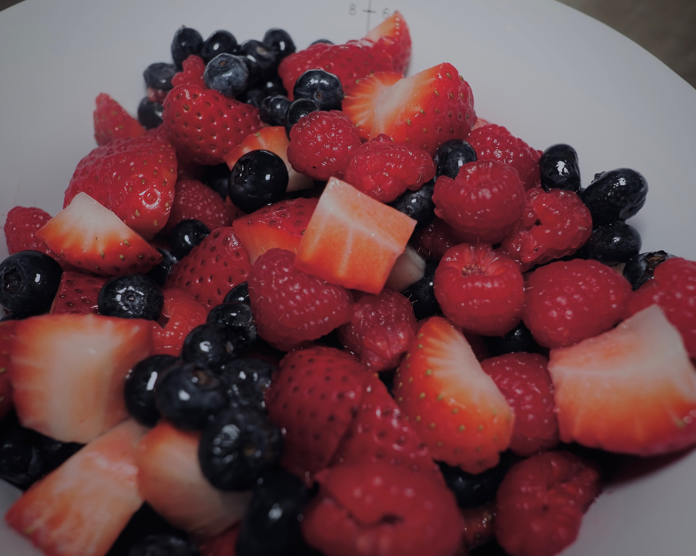
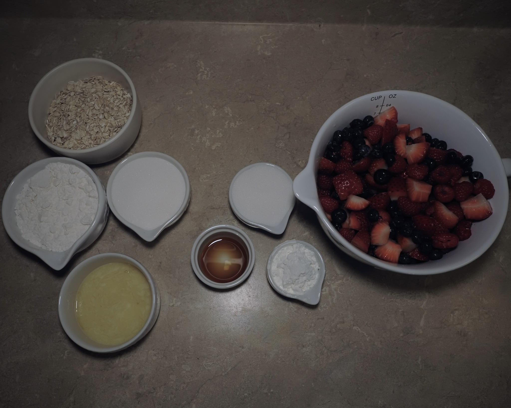
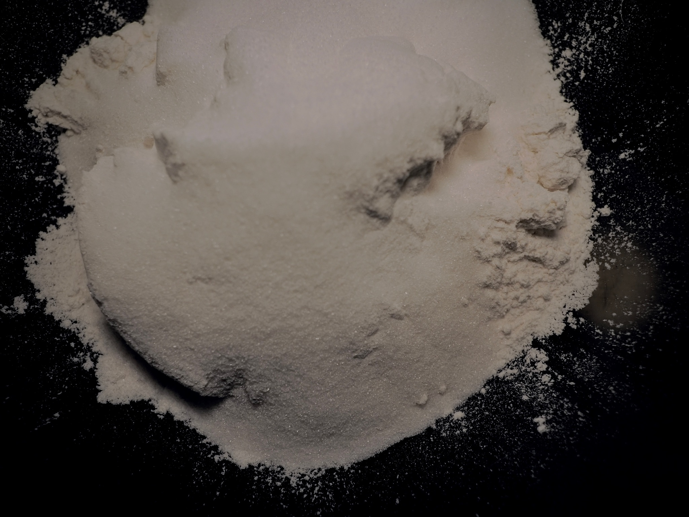
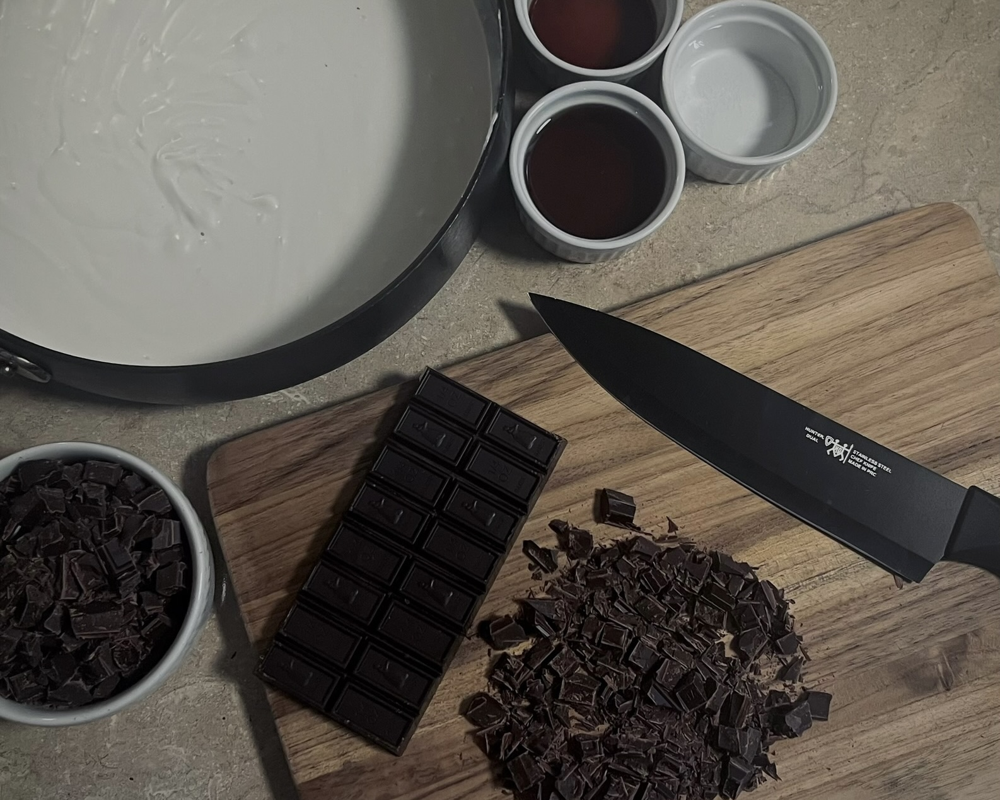
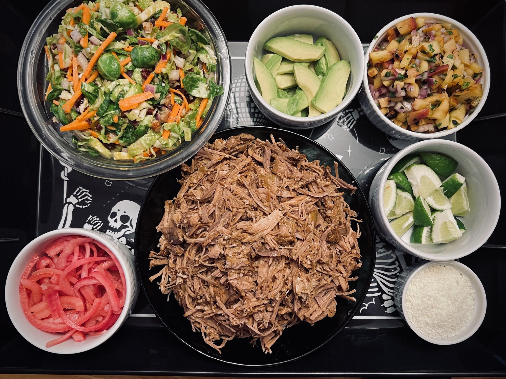
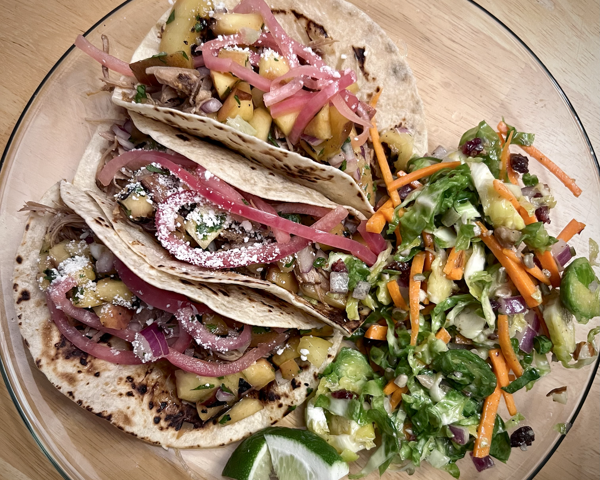
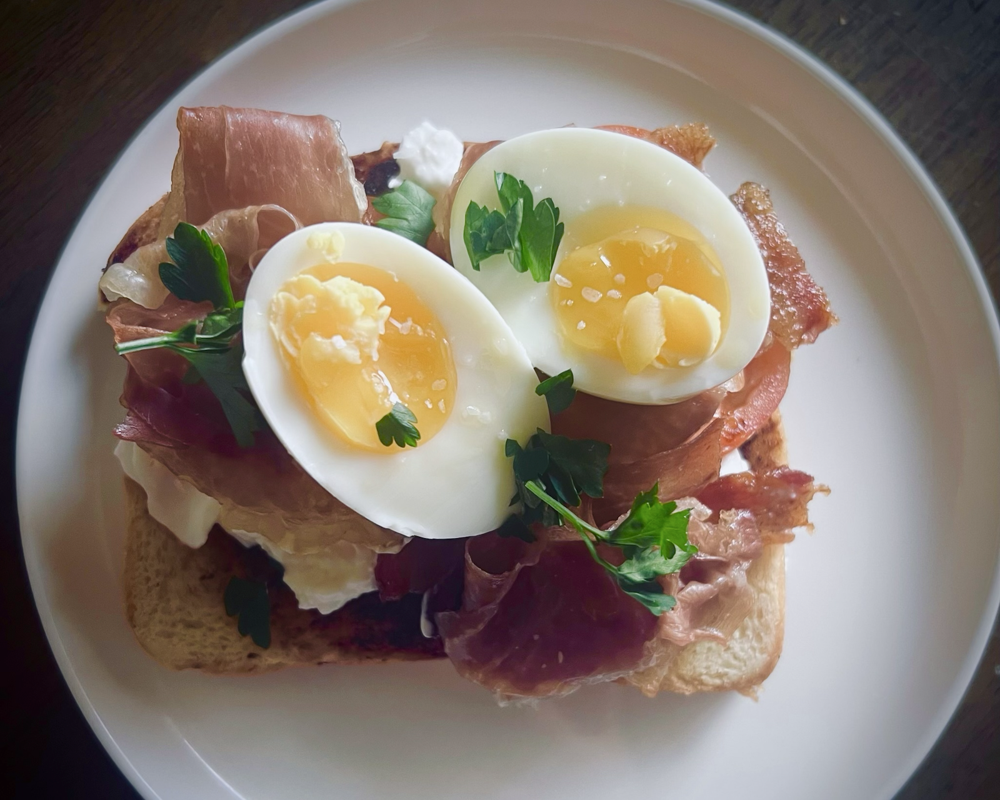

Culinary
Culinary student in formal training, focused on foundational technique, organization, and consistent execution.
Building on a long-standing personal practice, with attention to precision, efficiency, and presentation.
Seeking an entry-level kitchen role to contribute to service and continue developing through hands-on work.

TrainingSanta Rosa Junior College — Culinary Arts Program (in progress)
Kitchen ApproachClean, organized workflow with attention to detail
Consistent clean-as-you-go habits
Reliable execution and timing
Consistent clean-as-you-go habits
Reliable execution and timing
Core SkillsPrecision knife work and consistent cuts
Organized mise en place and station setup
Cold station and pantry preparation
Foundational cooking techniques (sauté, roast, blanch)
Organized mise en place and station setup
Cold station and pantry preparation
Foundational cooking techniques (sauté, roast, blanch)
Practical ExperienceIndependent cooking across multiple cuisines
Group meal preparation and coordination
Prep execution with attention to timing and consistency
Group meal preparation and coordination
Prep execution with attention to timing and consistency
Background10+ years in operations and structured environments,
bringing organization, reliability, and workflow awareness into the kitchen
bringing organization, reliability, and workflow awareness into the kitchen
Process





